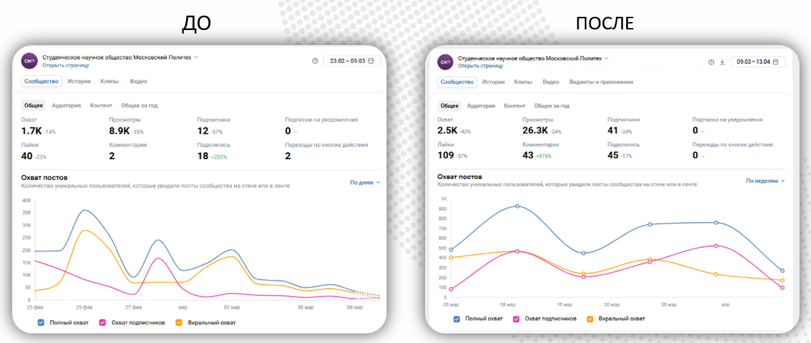

Описание проекта
Проект по развитию социальных сетей СНО нацелен на популяризацию науки среди молодежи и расширение влияния студенческого научного общества. Через активное ведение Telegram и ВКонтакте планируется привлекать больше студентов к научной деятельности, демонстрируя ее актуальность и доступность. Контент будет ориентирован на освещение научных достижений, интересных исследований, и возможностей для развития в науке. Создание активного сообщества, где студенты смогут обмениваться идеями и находить вдохновение, станет ключевым фактором успеха. В конечном итоге, проект стремится сформировать новое поколение увлеченных наукой студентов, активно участвующих в развитии СНО и популяризирующих научные знания в обществе.
